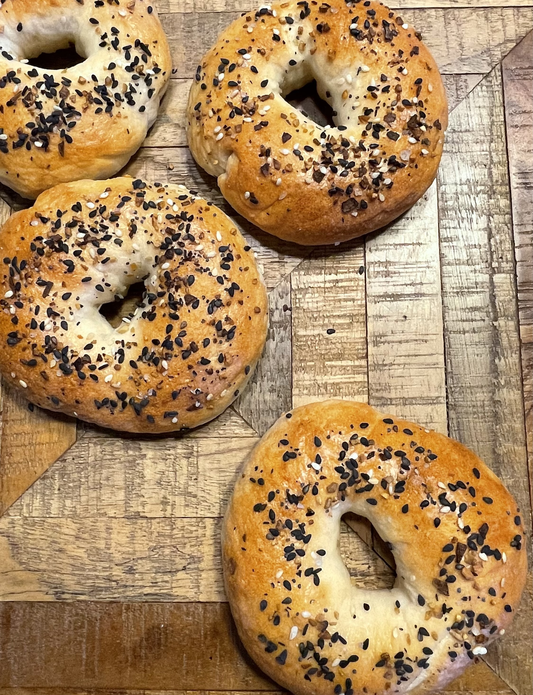

Bagels

Photo credit: rivco
Description
Delicious, chewy bagels that are better than store bought.
These bagels can be topped with your favourite seasonings like poppyseed, cheddar and jalapeno, sesame seeds, and everything seasoning.
Ingredients
- 1 1/2 cups warm water
- 2 1/4 tsp active dry yeast
- 1 T sugar
- 480g all-purpose flour
- 1 T salt
- 1 T honey
- 1 egg white
- Optional toppings:
- Sesame seeds
- Poppyseeds
- Everything seasoning
- Shredded cheese
Steps
- Combine warm water, sugar, and yeast in bowl of stand mixer. Leave for 10 minutes until frothy.
- In separate bowl, combine flour and salt. Add to wet ingredients after the 10 minutes. Mix on low speed until roughly mixed. Increase speed to medium and mix for around 10 minutes.
- Once smooth dough ball is achieved, stop the mixer. Form ball with hands and return to lightly oiled bowl. Cover with towel or plastic wrap and place in warn, draft-free place.
- Allow to rise 60 - 90 minutes until doubled in size.
- Once risen, separate into 8 equal pieces. Shape into balls. Pierce each ball in the centre and form into rings. Place each ring on tray lined with parchment paper with at least an inch of space between. Leave to rise another 30 minutes.
- Bring a large pot of water to a boil with 1 T honey. Boil bagels in batches of 2 or 3 at a time. Boil 1 minute on the first side, flip and boil 30 seconds on the other. Place on parchment lined baking sheet, leaving an inch or so of space between.
- Mix egg white with 1 T water. Brush tops of bagel with egg wash and sprinkle with seasoning. Do one at a time to ensure good adhesion of toppings.
- Preheat oven to 400°. Bake bagels for 20 -25 minutes, rotating pan around half-way through cooking time.
- Allow cooked bagels to cool on rack fully before eating or freezing.
Home